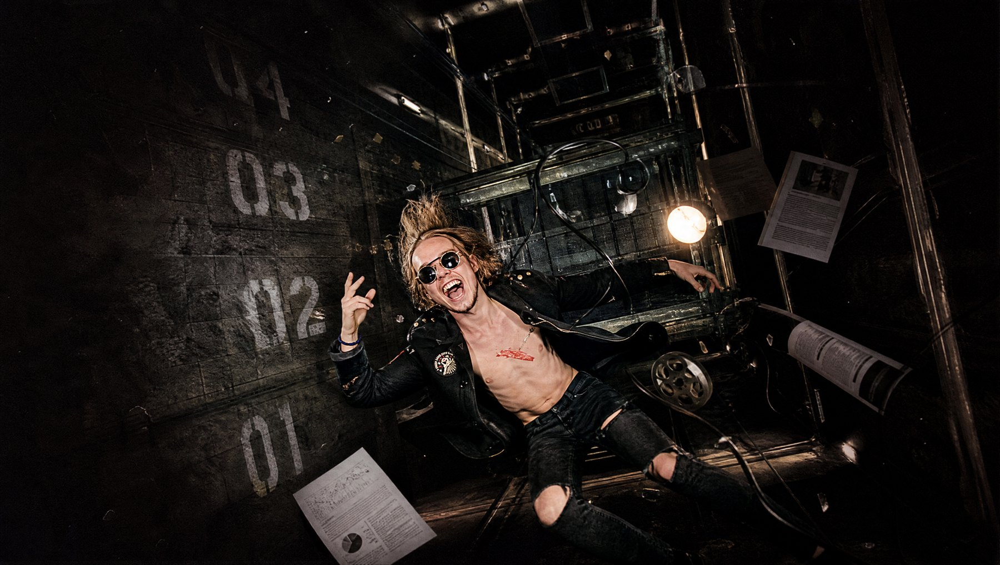
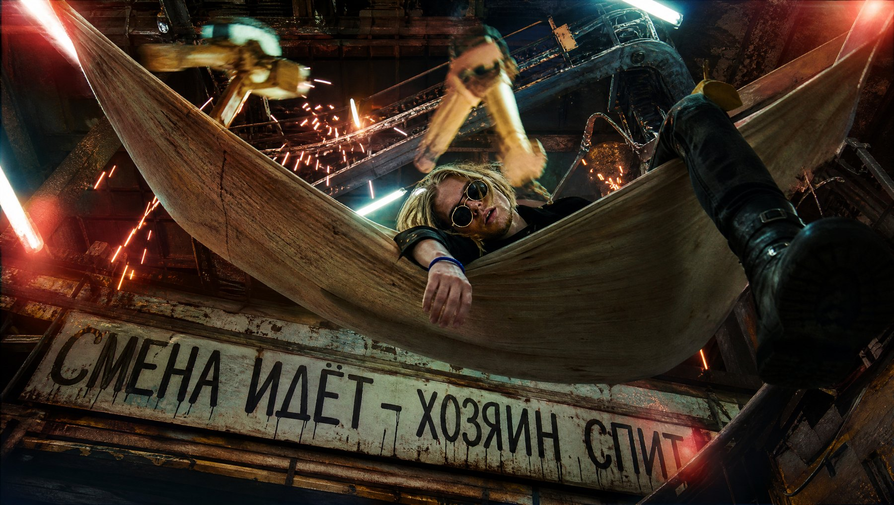
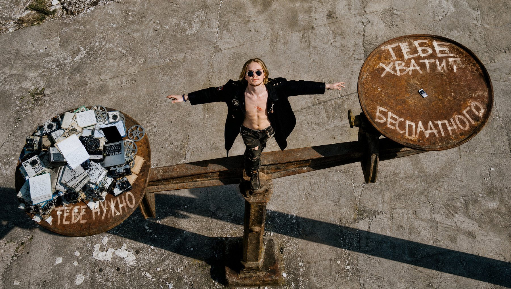

Все промпты, шаги и ссылки из видео. Сайты, видео со звуком, презентации и подкасты в одном приложении - и всё это можно запускать с телефона.
Смотреть видеоТри вещи, ради которых стоит пройти всё до конца.
Всё, что нужно поставить и открыть до старта.
Тринадцать шагов. Промпты можно копировать кнопкой - они рабочие, ровно те, что в видео.
Со второй минуты работаем руками. Это отдельная программа на компьютер, а не вкладка в браузере - это принципиально, дальше поймёшь почему.
Открой раздел Agent Team и создай агента. Это как сотрудник со своим именем, специализацией и рабочей папкой.
Рабочий агент: собирает презентации из моих файлов, делает выжимки по ссылкам, верстает сайты и генерит к ним видео
Тут два разных подключения, и их важно не путать. Сначала общий чат - один на всё приложение.
/newbot
Открой раздел Plugins - больше сотни готовых навыков. Поставь те, что нужны сегодня.
Файлы лежат на компьютере, ты с телефоном в другом месте. Одна строка в чат - и всё делается само.
найди мои статьи в папке (подставь свою папку) и собери из них презентацию на 20 слайдов в формате pptx. пройдись по каждой статье, вытащи главное, добавь выводы и риски. оформи нормально, не сплошным текстом
теперь обобщи эти же 10 статей и сделай из них аудиоверсию, чтобы я мог послушать в дороге

Даёшь ссылку и просишь выжимку. Агент сам идёт на страницу, вытаскивает посты и возвращает структурированный результат.
зайди на https://x.com/OpenAI и обобщи последние 10 постов. по каждому коротко: что вышло и зачем это нужно. сохрани результат в рабочую папку
Главный приём всего уровня: инструкцию для задачи пишешь не ты, а сам агент. Он знает свои навыки, а ты нет.
напиши сам инструкцию для задачи по расписанию: каждое утро в 9:00 собирать свежие посты OpenAI за неделю, делать выжимку и сохранять отчёт в PDF в рабочую папку. распиши по шагам, укажи какие свои навыки будешь использовать и что делать если данных не будет
Одного промпта мало. Попросишь нейронку сделать сайт - получишь ровно то же, что все. Разница начинается раньше: до промпта нужен словарь стилей.
собери мне каталог референсов одной страницей, чтобы она открывалась двойным кликом по файлу, без всякого сервера. все данные вшей прямо в страницу папка со скриншотами сайтов которые мне нравятся тут: (подставь свою папку) сначала посмотри каждую картинку по очереди и вытащи с неё название сайта, стиль, шрифты, цвет, текстуру, сетку дальше собери приложение: 1 сгруппируй все скриншоты по семьям стилей, каждой семье дай короткое название из двух трёх слов 2 сверху панель фильтров по семьям, у каждой счётчик сколько внутри, слева кнопка все с общим числом, справа плашка сколько всего семей получилось 3 сетка карточек: превью скриншота, название сайта, подпись семьи и теги словарь чем этот дизайн держится. если тегов больше трёх показывай три и плюс сколько осталось 4 по клику на карточку модалка: название, семья, одна строка почему этот дизайн работает, полный список тегов 5 в модалке блок рецепта картинки: шаблон вида подставь свой объект, и под ним готовый текст рецепта под этот стиль в качестве 2k 6 в модалке три кнопки скопировать бриф это описание для сборки всего сайта в этом стиле, скопировать промпт картинки, закрыть 7 на каждую семью отдельный экран со сводным словарём стиля, там теги всей семьи в одном месте всё тяни из этой папки автоматически, ничего не вписывай руками, добавлю картинки потом сам подхватит оформи тёмно, моношрифтом, как технический каталог. без фиолетовых градиентов и без inter
Берём навык landing-page-builder и включаем режим Goal - он держит цель через десятки ходов и не даёт агенту ломать сделанное раньше.
цель сессии: собрать лендинг richter. сначала 5 версий в разных эстетиках в папках v1-v5, потом развернуть выбранную в полноценный сайт с картинками. цель закрыта когда сайт открывается, все блоки на месте, картинки стоят, и на телефоне не разъезжается
собери лендинг для richter. это услуга: мы привозим группу, которая играет такой концерт, что здание трясёт по-настоящему. площадка после этого становится легендой города, о ней говорят годами. услуга очень дорогая, в неё входит нагон толпы на этот концерт. энергия игги попа - сцена, пот, кровь, разнесённый зал главная кнопка забронировать обрушение - на странице подписана book the collapse, стоит в первом экране и повторяется в конце страницы интент: чтобы владелец площадки за 3 секунды подумал - эти люди сделают моё место легендой, и за это не жалко заплатить. опасность и статус, а не вечеринка и не аренда звука всегда: одна большая монументальная картинка держит страницу, изображение вплетено в макет а не лежит отдельной шапкой, высокая типографическая иерархия, заголовок это утверждение о деле а не лозунг, технические пометки на полях, ощущение физической силы никогда: фиолетовые градиенты, глянцевые 3d шары, стоковые улыбки, всё скругленное, сетка иконок с фичами, inter и системные шрифты, радужная палитра, слово вечеринка сделай 5 версий страницы, каждая в своей папке v1 v2 v3 v4 v5, интент и запреты одинаковые для всех не смешивай направления, каждая версия честно уходит в свою эстетику
Выбираешь версию, которая легла, и разворачиваешь её в полноценную страницу с картинками.
берём версию 4, панк-зин, и разворачиваем её в полноценный сайт сделай минимум 10 блоков, у каждого своя вёрстка - не десять одинаковых секций подряд, а разный ритм: где-то во весь экран, где-то две колонки, где-то коллаж внахлёст, где-то узкая колонка с большим воздухом эстетика везде одна: рваная бумага, вырезанные буквы, скотч, штампы, зернистая чёрно-белая печать с одним акцентом блоки придумай сам под смысл услуги, но обязательно должны быть: чем мы занимаемся, как проходит обрушение, галерея площадок после наших концертов с листанием, что входит в услугу, нагон толпы, отзывы владельцев площадок, цена, частые вопросы, финальный призыв сам реши, сколько картинок нужно этому сайту и где они стоят - под каждую зарезервируй место с правильными пропорциями потом сгенери их все в качестве 2k в этой же эстетике никакого читаемого текста внутри картинок, буквы только как нечитаемая фактура поставь картинки на свои места
С первого раза не выходит ни у кого - это нормально. Чинится словами, а не руками.
почини, чтобы блок был на весь экран, на всю ширину
позови verifier и дай ему проверить готовый сайт с чистого листа. пусть смотрит только на результат, без нашей переписки: битые ссылки, съехавшая вёрстка, пустые блоки, как выглядит на телефоне. пусть выпишет что нашёл и сам это починит
Сайт есть, а продавать его нечем. Берём навык video-story-generator - и делаем ролик тем же агентом, в том же окне.
сделай видео для этого сайта, в той же эстетике панк-зина в кадре: тёмный зал, толпа снизу, свет прожектора сквозь дым, фронтмен на краю сцены в прыжке. зернистая чёрно-белая плёнка, высокий контраст, ощущение что камера в толпе и её толкают движение медленное, один непрерывный кадр, без склеек качество 2k, длительность 15 секунд звук: гул толпы, эхо зала, низкий гитарный гул на фоне никакого читаемого текста в кадре
Финал работы - показать результат заказчику, не поднимая ничего вручную.

Всё, что упоминалось в видео, в одном месте.